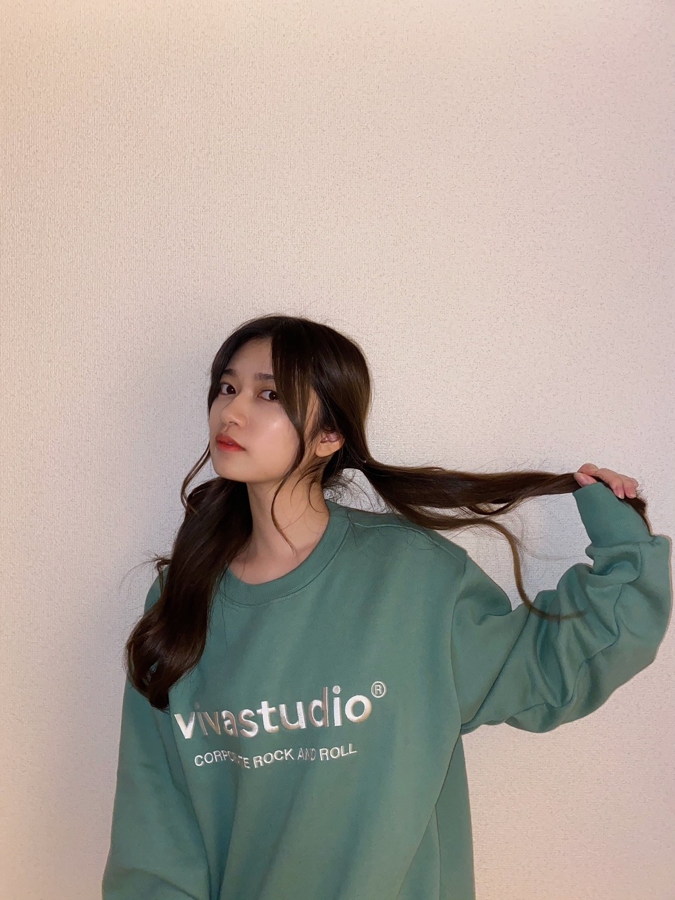
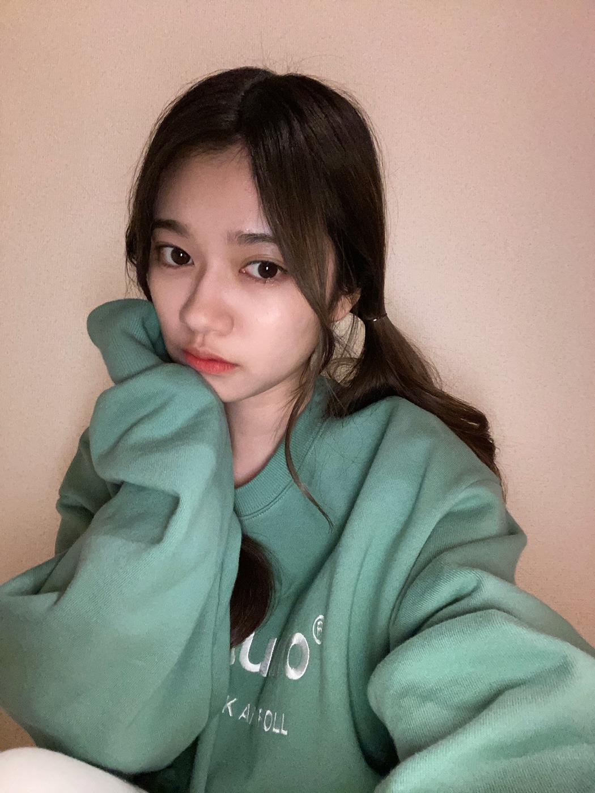
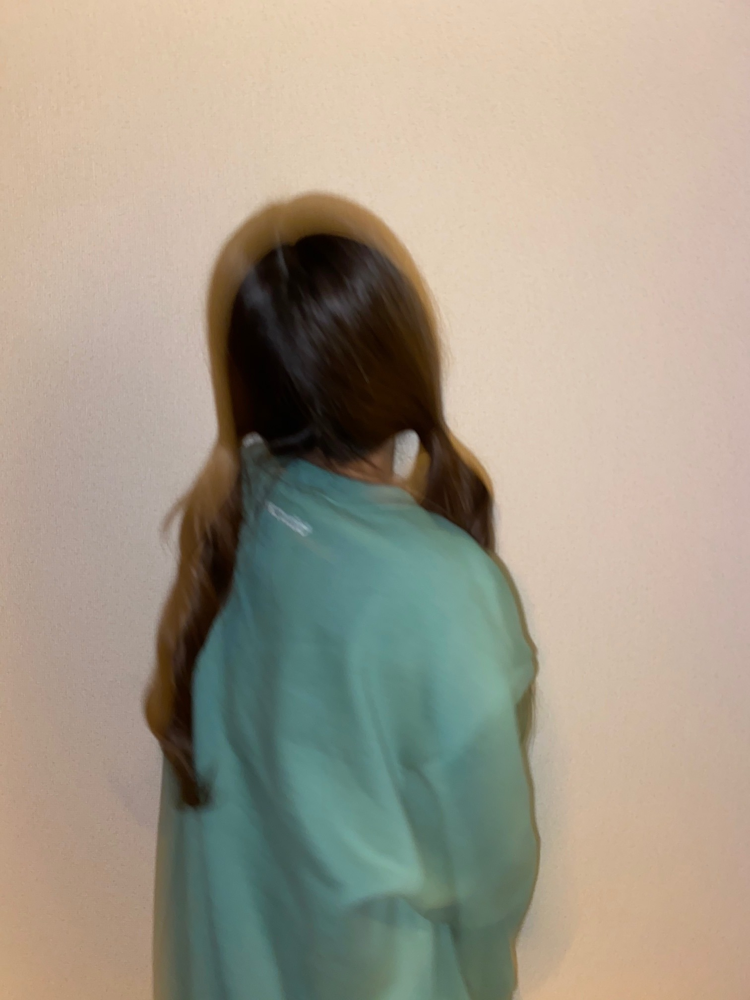
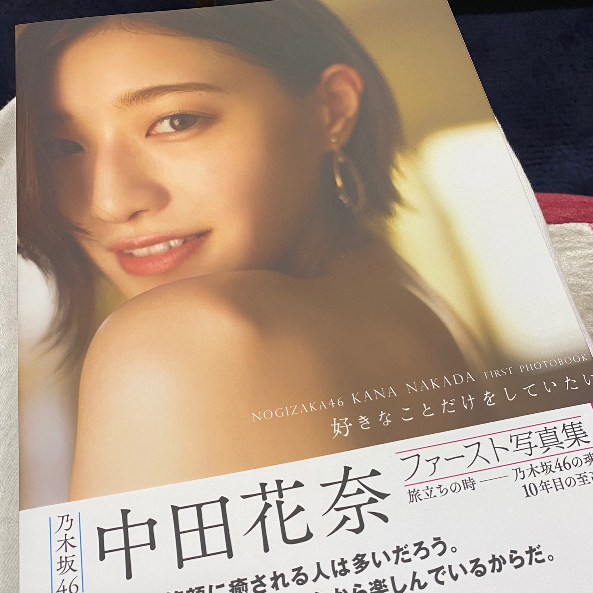

2020/1023Fri10月

小さな頃から夢をみたら
お母さんに報告するのが朝の日課でした。
朝からテンションは常に一定です。
寝起きで踊れと言われても踊れるくらい一定です。
最近は歯が抜ける夢をみて
怖くなりました。
しかも現実じゃあり得ないファンタジーな虫歯で
歯が取れてしまって
思い出すだけで鳥肌がとまらない夢でした。
皆さんも変な夢見ることありますか。？？
最近寒い日も多くなってきたので
体調には気をつけてくださいね。
お風呂浸かって温かくして沢山睡眠とって
インフルエンザにも勝てるように
今から体調管理しっかりとしたいです。☺️✨
Mステありがとうございました。
のぎおびありがとうございました。
選曲もとても大好きでした。
乃木坂のメンバーとしての白石さんとの
色々な最後の瞬間を噛み締めたいです。
かなさんには写真集サイン貰いました。☺️
皆さんには申し訳なさもありつつ自慢です。
お気に入りのページにサインもらいました。
ペロペロ。
表紙に貰ったら皆さんにも見せれたのカナ。
かなさん卒業されても
会うペロペロですよ。☺️✨

2020/10/23 19:30
コメント(610)
蘭世ちゃん、こんばんは
夢の話、最近見たのは怖い夢だったのだろうか？
自分の寝言で
助けて～、助けて～
って2回言ってるのを意識がある状態で言ってました
まいやんの色々な最後を間近で見れて羨ましい
みんなで明るく笑顔で見送ってあげてね
かなりんの写真集は、買いました
蘭世ちゃんとお揃いだ
かなりん本当に綺麗で、写真集は芸術品だなと思いました
ぺろぺろは永遠に不滅です
じゃぁ、またね
夢の話、最近見たのは怖い夢だったのだろうか？
自分の寝言で
助けて～、助けて～
って2回言ってるのを意識がある状態で言ってました
まいやんの色々な最後を間近で見れて羨ましい
みんなで明るく笑顔で見送ってあげてね
かなりんの写真集は、買いました
蘭世ちゃんとお揃いだ
かなりん本当に綺麗で、写真集は芸術品だなと思いました
ぺろぺろは永遠に不滅です
じゃぁ、またね
らんらん、、
夢ん中でも賑やかというか
だいぶお忙しそうだね(=^▽^)σ
あんまり熟睡できてないのでは？
と、すごく心配になりました(T-T)
たまにはリラックスしてくださいね(^^)
変な夢か、そういや最近、
好きな人が出てきて！初めて(^^)
でね、傘をさしている彼女に
更に上から傘をさしてあげるという、、
なんともお節介おじさんばくはつな
パラレルワールドでした(*´-`)
それからというもの、
その子と今まで以上に仲良くなって
ちょっと良い感じに(*^^*)
なんか夢と関係あるんかな？(^^)
いつか虹彦先生に相談してみようかなw
それじゃ！また明日(#^.^#)
ps☆
Ｍステ！
やっぱ乃木坂46には
蘭世がいなきゃダメだ(^-^)v
夢ん中でも賑やかというか
だいぶお忙しそうだね(=^▽^)σ
あんまり熟睡できてないのでは？
と、すごく心配になりました(T-T)
たまにはリラックスしてくださいね(^^)
変な夢か、そういや最近、
好きな人が出てきて！初めて(^^)
でね、傘をさしている彼女に
更に上から傘をさしてあげるという、、
なんともお節介おじさんばくはつな
パラレルワールドでした(*´-`)
それからというもの、
その子と今まで以上に仲良くなって
ちょっと良い感じに(*^^*)
なんか夢と関係あるんかな？(^^)
いつか虹彦先生に相談してみようかなw
それじゃ！また明日(#^.^#)
ps☆
Ｍステ！
やっぱ乃木坂46には
蘭世がいなきゃダメだ(^-^)v
たまらんぜー！
ブログ更新ありがとう
蘭世ちゃん私服可愛い(^-^)
これからもずっと応援し続けてます、ファイト
蘭世ちゃん私服可愛い(^-^)
これからもずっと応援し続けてます、ファイト
ブログ更新ありがとう
インスタ、モバメ、ブログと沢山蘭世がやってくれているので毎日楽しみにしてます
おかげで仕事も頑張れてます
もう少しでまいやんの卒業コンサートですね
お互いに悔いのないように見送りしたいですね
画面の向こうからですが、まいやん、そして蘭世のことを応援してますね
Mステも良かったです
やっぱり蘭世が出てると嬉しいです
これからも応援してますね
またコメントしますね
蘭世のことがすきすきぴーナッツ
インスタ、モバメ、ブログと沢山蘭世がやってくれているので毎日楽しみにしてます
おかげで仕事も頑張れてます
もう少しでまいやんの卒業コンサートですね
お互いに悔いのないように見送りしたいですね
画面の向こうからですが、まいやん、そして蘭世のことを応援してますね
Mステも良かったです
やっぱり蘭世が出てると嬉しいです
これからも応援してますね
またコメントしますね
蘭世のことがすきすきぴーナッツ
ブログありがとう！
最近矯正で抜いたけど
健康が1番です！
体に気をつけてね〜！！
最近矯正で抜いたけど
健康が1番です！
体に気をつけてね〜！！
蘭世、こんばんは
反乱軍のスパイとしてファーストオーダーに
追われながら、応援している
まさとです
ミュージックステーションおめでとう
ちゃんと録画もして何度も見返しているよ
木曜日にディズニーランドに行ってきました
早速新しいエリアの美女と野獣やベイマックスの
乗り物の抽選に挑戦したんですが
全部外れてがっかりでした
人数制限があるのでそれほど人がいるとは
思ってなかったのですがやっぱり
ディズニーは大人気ですね
次は11月の下旬に行く予定なので
ぜひあてて新しいエリアに入りたいです
ではまたね
いつも素敵なモバメありがとう
バイバイ
反乱軍のスパイとしてファーストオーダーに
追われながら、応援している
まさとです
ミュージックステーションおめでとう
ちゃんと録画もして何度も見返しているよ
木曜日にディズニーランドに行ってきました
早速新しいエリアの美女と野獣やベイマックスの
乗り物の抽選に挑戦したんですが
全部外れてがっかりでした
人数制限があるのでそれほど人がいるとは
思ってなかったのですがやっぱり
ディズニーは大人気ですね
次は11月の下旬に行く予定なので
ぜひあてて新しいエリアに入りたいです
ではまたね
いつも素敵なモバメありがとう
バイバイ
Instagramの投稿オシャレで好きです！
応援してます！
歯が抜ける夢怖いですよね…
体調に気を付けて頑張ってください
応援してます！
歯が抜ける夢怖いですよね…
体調に気を付けて頑張ってください
ブログ更新ありがとうございます！
題名が10月ということで、それにかけて
10月26日誕生日なんです！
祝って欲しいです！無理かもしれないんですが、
お願いします！一応飛鳥ちゃん推しです！
飛鳥さんにも出して欲しい〜♡
題名が10月ということで、それにかけて
10月26日誕生日なんです！
祝って欲しいです！無理かもしれないんですが、
お願いします！一応飛鳥ちゃん推しです！
飛鳥さんにも出して欲しい〜♡
ブログ更新ありがとう！
自分はあまり夢を見ないですね〜
眠りが深いのかな笑
Mステお疲れ様でした！
録画してあるので何回も見返してます
蘭世さん輝いてます
卒業しても仲良くできる関係ってとても素敵ですね。
自分はあまり夢を見ないですね〜
眠りが深いのかな笑
Mステお疲れ様でした！
録画してあるので何回も見返してます
蘭世さん輝いてます
卒業しても仲良くできる関係ってとても素敵ですね。
ブログ更新ありがとう！
メールで言ってたやつだね！
歯取れるのはさすがにこわすぎます。笑
変な夢は最近ないけど、仕事でのなかなかリアルな夢だったので逆にこわくなりました。笑
コロナにインフルエンザにと、色々と多くなってきましたが、変わらず予防をしてれば大丈夫と信じて予防をして、暖かくしますね☺️
蘭世さんもお気をつけて！
Mステではまいやんとの思い出作れたみたいで何よりです☺️
のぎおびは可愛いが横行してましたよー！笑
かなさんの写真集、サイン付きはペロペロですね：）
羨ましい！
仲良いこと良きかな！！
以上です！
またメールのお返事も書きに来ますね！
では～：）
悠人⊿
メールで言ってたやつだね！
歯取れるのはさすがにこわすぎます。笑
変な夢は最近ないけど、仕事でのなかなかリアルな夢だったので逆にこわくなりました。笑
コロナにインフルエンザにと、色々と多くなってきましたが、変わらず予防をしてれば大丈夫と信じて予防をして、暖かくしますね☺️
蘭世さんもお気をつけて！
Mステではまいやんとの思い出作れたみたいで何よりです☺️
のぎおびは可愛いが横行してましたよー！笑
かなさんの写真集、サイン付きはペロペロですね：）
羨ましい！
仲良いこと良きかな！！
以上です！
またメールのお返事も書きに来ますね！
では～：）
悠人⊿
蘭世ー！こんばんは〜
ブログ更新ありがとう！
モバメでも話してた夢の話ね笑
虫歯で取れたのか〜
ちょっと不吉…笑
Mステものぎおびも見たよー！
選曲すごく良かったよね
今誰は個人的に乃木坂を知ってから一番最初に好きになったぐらいいい曲だと思うし、ありがちな恋愛もすごく曲調が好きだし、シンクロニシティは言わずもがな蘭世が選抜入りした曲で、曲自体もすごく好きだし、ほんとにいい選曲だった！
かなりんのサイン羨ましい…！
インスタも見たよ！
一昨日の鬼の動画は鬼滅の刃を意識したのかハロウィンの仮装を意識したのかどっちなんだろ笑
それとも特に何を意識したわけでもなくって感じかな？
顔の動きが可愛かった！
昨日のツインテールの写真めっちゃ可愛かった！
やっぱり蘭世はツインテールすごく似合うし、お姉さんメンバーになっていってもしてて欲しいなーって思う！
今日のストーリーもめっちゃ可愛かった！
ハロウィンが近いからこういう仮装系の動画をあげてくれてるのかな？笑
まだまだ待ってるよー！
モバメもありがとう！
おれは最近全然夢見なくてつまんないから、何でもいいから見たいなって思う笑
でも歯が抜ける夢は勘弁かな笑
インスタのフォロワー約16万人凄い！！
これだけの人が蘭世に興味を持ってくれているっていうことがすごく嬉しい！
数字にとらわれすぎるのは良くないけど、やっぱりモチベーションになるもんね！
蘭世はすごく行動力とか実行力があるから、こうやって自分のことを発信できる場ができて嬉しい！
これからも投稿楽しみにしてるね！
時々ここ誤字ってるってなる時あるけど、それもご愛嬌だから大丈夫！
写真の髪色光の当たり具合なのかすごく綺麗！
今日も夢見たんだね笑
これからは蘭世の夢見た報告が楽しみだな〜笑
もう誕生日から1ヶ月経ったんだね
こちらこそ何卒！
写真もありがとう！
あとweiboの中国語の自己紹介の動画も見たよ！
すごく喋り方が可愛かった笑
韓国語は勉強してるって言ってたけど、中国語も勉強してるのかな？
この前ストーリーの質問返しで中国の方からの質問に中国語で返してたし
色んなこと頑張っててほんとに凄いなって思う！
長くなってごめんね！
蘭世も体調に気をつけてお仕事頑張ってね！
じゃあまた！
ブログ更新ありがとう！
モバメでも話してた夢の話ね笑
虫歯で取れたのか〜
ちょっと不吉…笑
Mステものぎおびも見たよー！
選曲すごく良かったよね
今誰は個人的に乃木坂を知ってから一番最初に好きになったぐらいいい曲だと思うし、ありがちな恋愛もすごく曲調が好きだし、シンクロニシティは言わずもがな蘭世が選抜入りした曲で、曲自体もすごく好きだし、ほんとにいい選曲だった！
かなりんのサイン羨ましい…！
インスタも見たよ！
一昨日の鬼の動画は鬼滅の刃を意識したのかハロウィンの仮装を意識したのかどっちなんだろ笑
それとも特に何を意識したわけでもなくって感じかな？
顔の動きが可愛かった！
昨日のツインテールの写真めっちゃ可愛かった！
やっぱり蘭世はツインテールすごく似合うし、お姉さんメンバーになっていってもしてて欲しいなーって思う！
今日のストーリーもめっちゃ可愛かった！
ハロウィンが近いからこういう仮装系の動画をあげてくれてるのかな？笑
まだまだ待ってるよー！
モバメもありがとう！
おれは最近全然夢見なくてつまんないから、何でもいいから見たいなって思う笑
でも歯が抜ける夢は勘弁かな笑
インスタのフォロワー約16万人凄い！！
これだけの人が蘭世に興味を持ってくれているっていうことがすごく嬉しい！
数字にとらわれすぎるのは良くないけど、やっぱりモチベーションになるもんね！
蘭世はすごく行動力とか実行力があるから、こうやって自分のことを発信できる場ができて嬉しい！
これからも投稿楽しみにしてるね！
時々ここ誤字ってるってなる時あるけど、それもご愛嬌だから大丈夫！
写真の髪色光の当たり具合なのかすごく綺麗！
今日も夢見たんだね笑
これからは蘭世の夢見た報告が楽しみだな〜笑
もう誕生日から1ヶ月経ったんだね
こちらこそ何卒！
写真もありがとう！
あとweiboの中国語の自己紹介の動画も見たよ！
すごく喋り方が可愛かった笑
韓国語は勉強してるって言ってたけど、中国語も勉強してるのかな？
この前ストーリーの質問返しで中国の方からの質問に中国語で返してたし
色んなこと頑張っててほんとに凄いなって思う！
長くなってごめんね！
蘭世も体調に気をつけてお仕事頑張ってね！
じゃあまた！
ブログありがと！
かなりん沈金聞いてまーす！
さゆりんご軍団活動があるので
そこはさみしく感じません！(強がり)
と、コメントしてたらインスタが
まいやん卒コン、検査バッチリだったもんね！
楽しんでる姿みるのを楽しみにしてるね！
かなりん沈金聞いてまーす！
さゆりんご軍団活動があるので
そこはさみしく感じません！(強がり)
と、コメントしてたらインスタが
まいやん卒コン、検査バッチリだったもんね！
楽しんでる姿みるのを楽しみにしてるね！
秋、ですね。
お元気そうで何よりです。
寺田さんの言うように、
インフルエンザには気を付けましょう。
お元気そうで何よりです。
寺田さんの言うように、
インフルエンザには気を付けましょう。
蘭世ちゃん٩(๑´･ᗜ･`๑)۶
夢といえば今日蘭世ちゃんが夢に出てきたんよー
蘭世ちゃんは大きな会場でライブをしていてわたしたちはそれを見ていたよ！願望が出すぎてわらっちゃった☆
インスタめちゃくちゃ楽しみにしてるので蘭世ちゃんのペースでて更新おねがいしまーす( ᐡ｡• ·̫ •｡ᐡ )♡
ではではー！
夢といえば今日蘭世ちゃんが夢に出てきたんよー
蘭世ちゃんは大きな会場でライブをしていてわたしたちはそれを見ていたよ！願望が出すぎてわらっちゃった☆
インスタめちゃくちゃ楽しみにしてるので蘭世ちゃんのペースでて更新おねがいしまーす( ᐡ｡• ·̫ •｡ᐡ )♡
ではではー！
やぁ
メールありがとう！
ん？知ってるで。
URLやろ一歩一歩進んでるやん
ブログにメールにインスタ。
届けてな！
ちゃんと溢さず受け止めるから。
きっとまた後で(｡･ω･)ﾉﾞ
お疲れ
インスタもブログも、蘭世らしさが出ていて好き
けれど、大好きなお姉さんメンバーが揃って卒業は寂しいよなぁ
インスタもブログも、蘭世らしさが出ていて好き
けれど、大好きなお姉さんメンバーが揃って卒業は寂しいよなぁ
蘭世ーー！！ファンです。はい。とてもファンです。ずっと応援してます。めっちゃファンです。
ブログ更新ありがとうございます！
僕もたぶん夢はよく見る方だと思います。
小学生の頃は熱がある時は必ず夢にゴジラが出てきてました（笑）
Mステとっても良きでした！
やっぱり寺田さん好きだな、寺田さんのパフォーマンス見れて幸せだなって感じました:-)
のぎおび
寺田さんのテンションやしゃべり方がとても好きで、見ている時間は本当に幸せな気分でした！
いつもありがとう！
やっぱり寺田さんのことが大好きです！
寒くなってきましたが寺田さんも体調には気をつけてくださいね！
僕もたぶん夢はよく見る方だと思います。
小学生の頃は熱がある時は必ず夢にゴジラが出てきてました（笑）
Mステとっても良きでした！
やっぱり寺田さん好きだな、寺田さんのパフォーマンス見れて幸せだなって感じました:-)
のぎおび
寺田さんのテンションやしゃべり方がとても好きで、見ている時間は本当に幸せな気分でした！
いつもありがとう！
やっぱり寺田さんのことが大好きです！
寒くなってきましたが寺田さんも体調には気をつけてくださいね！
大好き！
知り合いの歯科衛生士さんは
就職して初めの頃
歯が抜ける夢と
歯に追いかけられる夢を見てたらしい
(^o^)
就職して初めの頃
歯が抜ける夢と
歯に追いかけられる夢を見てたらしい
(^o^)
インスタに載せた時と同じ服やね！！
歯が抜ける夢って不安やったり現状から抜け出したいってことらしいよ！
自分も最近殺されそうになったりする夢見たよ！
やけいい夢見た時も変な夢見た時も夢占い見てる！
来週で2人も卒業してしまうね……
寂しいけど明るく送り出せるようにします！！
体に気をつけてお仕事頑張ってください！
インスタの投稿とストーリー楽しみにしてます！
歯が抜ける夢って不安やったり現状から抜け出したいってことらしいよ！
自分も最近殺されそうになったりする夢見たよ！
やけいい夢見た時も変な夢見た時も夢占い見てる！
来週で2人も卒業してしまうね……
寂しいけど明るく送り出せるようにします！！
体に気をつけてお仕事頑張ってください！
インスタの投稿とストーリー楽しみにしてます！
らんぜちゃん、こんばんは！
マスクつけ忘れて外出して
やばっ、忘れた、とあせる夢を見ますね～
マスクつけ忘れて外出して
やばっ、忘れた、とあせる夢を見ますね～
らんぜちゃんの自撮りはいつもお洒落だ
ね。らんぜちゃん、その人というより、
らんぜちゃん含めての世界観。
歯が抜ける夢って、たしかなんか意味が
あったような。
そういえば、最近夢みてないなぁ。現実
でも。
でも体調がすこぶるいいです。
絶対ペロペロだよね。
ね。らんぜちゃん、その人というより、
らんぜちゃん含めての世界観。
歯が抜ける夢って、たしかなんか意味が
あったような。
そういえば、最近夢みてないなぁ。現実
でも。
でも体調がすこぶるいいです。
絶対ペロペロだよね。
蘭世ちゃんブログありがとう。俺も嫌な夢を見るよ。いつも蘭世ちゃんに会える夢見たいけど全然見れないよ。だから頑張って蘭世応援します。
ブログ更新ありがとー！
Mすて最高だった！
来週のまいやんの卒コン楽しみに待ってる！
まだ握手会行ったことないから行きたいなー！
これからも応援してます！最近寒くなって来たので体調に気を付けてね！
大好き！
Mすて最高だった！
来週のまいやんの卒コン楽しみに待ってる！
まだ握手会行ったことないから行きたいなー！
これからも応援してます！最近寒くなって来たので体調に気を付けてね！
大好き！
蘭世お疲れ様です。
ブログ更新ありがとうございます♪
mステ見たよ！録画ですけど何回も見返して蘭世が何処にいるか探してました。結構TVに映っていて嬉しかったです。
来週いよいよまいやんのラストライブですネ！チケット取って、休みも取ったので、体調整えて見たいと思います。
ブログ更新ありがとうございます♪
mステ見たよ！録画ですけど何回も見返して蘭世が何処にいるか探してました。結構TVに映っていて嬉しかったです。
来週いよいよまいやんのラストライブですネ！チケット取って、休みも取ったので、体調整えて見たいと思います。
ブログ更新ありがとう♡♡
Mステ良かったよ( *´꒳`* )のぎおびは少しだけだけど、見れて髪型可愛すぎてきゅんです❤️
そのトレーナー色が好きだし可愛くて買っちゃった
Mステ良かったよ( *´꒳`* )のぎおびは少しだけだけど、見れて髪型可愛すぎてきゅんです❤️
そのトレーナー色が好きだし可愛くて買っちゃった
蘭世ちゃん こんばんは～
のぎおび可愛いかったよー
Mステもカッコ良かったです
今回のセーターも似合い過ぎててキュンでーす
もっともっと見てたいよ〜♥
のぎおび可愛いかったよー
Mステもカッコ良かったです
今回のセーターも似合い過ぎててキュンでーす
もっともっと見てたいよ〜♥
蘭世、お疲れ様。
先週はミーグリありがとうね。
初めてだし、不安だったけど久しぶりに蘭世と話せたし、凄く楽しかったよ。追加日程に申し込んだし、また楽しみにしてるね。
インスタも楽しませてもらってます。
先週はミーグリありがとうね。
初めてだし、不安だったけど久しぶりに蘭世と話せたし、凄く楽しかったよ。追加日程に申し込んだし、また楽しみにしてるね。
インスタも楽しませてもらってます。
差出人:にゃん
宛先:らんらん
件名:ブログありがとうー！！
＿＿＿＿＿＿＿＿＿＿＿＿＿＿＿＿＿＿＿＿＿
こんばんわ〜！
蘭世ちゃんブログ更新ありがとう～～(*´▽｀*)
画像かわいいなあ、インスタも、少し謎な投稿もあったりオシャレなのもあったり、楽しませてもらってます！！！！！
いつもありがとね～～！！！
モバメはオフショが多め？ないめーじで、あたらしい一面を知れたりしてこれも嬉しきです、ありがと～～！！
この前、Instagramに質問してみたんですよ、蘭世さんファンの方がたくさんいらっしゃるから、質問埋もれちゃうだろうなあって、答えてもらえないかなあって思ってたら、答えてもらえてめちゃくちゃ嬉しかったです！！
これまたありがとうです( ´ ` *)
【！！！！しつもん！！！！】
男なのですが、パーカーのお洋服お揃いにしてもいいですか？？？？
あとあと！！
最近、7月にモバメを大量投下してくれた日のことを思い出して……
またあーいうことがあったら嬉しいなあ、って思ったり思わなかったり
いや、欲張りになっちゃってないかなって心配になるのですよ、、
だから、無理しない程度でいいので！！
もしまた機会があれば、たくさん送る日がほしいなあって笑
で、もしその時には、もっと蘭世さんのことを広めたくて、、
ハッシュタグ作りたいなーって、、
いまは#ranzemail で盛り上がってますが、もっといい意味でぶっ飛んだのがあってもいいのかな〜なんて！！！！
だから、なんか案があったら聞きたいです
とにかく！いつもありがとうね
今日は感謝を伝えたくなる日なのでした
明日も素敵な一日になりますよーにー！！
にゃん(ふみ)より
宛先:らんらん
件名:ブログありがとうー！！
＿＿＿＿＿＿＿＿＿＿＿＿＿＿＿＿＿＿＿＿＿
こんばんわ〜！
蘭世ちゃんブログ更新ありがとう～～(*´▽｀*)
画像かわいいなあ、インスタも、少し謎な投稿もあったりオシャレなのもあったり、楽しませてもらってます！！！！！
いつもありがとね～～！！！
モバメはオフショが多め？ないめーじで、あたらしい一面を知れたりしてこれも嬉しきです、ありがと～～！！
この前、Instagramに質問してみたんですよ、蘭世さんファンの方がたくさんいらっしゃるから、質問埋もれちゃうだろうなあって、答えてもらえないかなあって思ってたら、答えてもらえてめちゃくちゃ嬉しかったです！！
これまたありがとうです( ´ ` *)
【！！！！しつもん！！！！】
男なのですが、パーカーのお洋服お揃いにしてもいいですか？？？？
あとあと！！
最近、7月にモバメを大量投下してくれた日のことを思い出して……
またあーいうことがあったら嬉しいなあ、って思ったり思わなかったり
いや、欲張りになっちゃってないかなって心配になるのですよ、、
だから、無理しない程度でいいので！！
もしまた機会があれば、たくさん送る日がほしいなあって笑
で、もしその時には、もっと蘭世さんのことを広めたくて、、
ハッシュタグ作りたいなーって、、
いまは#ranzemail で盛り上がってますが、もっといい意味でぶっ飛んだのがあってもいいのかな〜なんて！！！！
だから、なんか案があったら聞きたいです
とにかく！いつもありがとうね
今日は感謝を伝えたくなる日なのでした
明日も素敵な一日になりますよーにー！！
にゃん(ふみ)より
蘭世さんブログ更新ありがとう。
蘭世さんインスタの中から画的繋がりで
扉開けてこのブログに来れた感じがして好きです。
最近たまに眠っている時に見た夢を
少し憶えていることがあります。
同じ職場だった人が多いのですが、
関係性が深くない人との絡みの短編集が多いです。
なぜ？夢の中まで、あの方にご登場いただけたのか？
いつも謎です。
かなさんの写真集買いました。
個人的にドリンク片手で左横顔時の”目”の
中に光が射し込んで輝きの中の儚さのような感じが
好きです。
これからも蘭世さんを応援してます。
蘭世さんインスタの中から画的繋がりで
扉開けてこのブログに来れた感じがして好きです。
最近たまに眠っている時に見た夢を
少し憶えていることがあります。
同じ職場だった人が多いのですが、
関係性が深くない人との絡みの短編集が多いです。
なぜ？夢の中まで、あの方にご登場いただけたのか？
いつも謎です。
かなさんの写真集買いました。
個人的にドリンク片手で左横顔時の”目”の
中に光が射し込んで輝きの中の儚さのような感じが
好きです。
これからも蘭世さんを応援してます。
変な夢、よく道に迷って迷子になり、家にたどり着けず、目が覚める、その日は1日、憂鬱〜
方向音痴でもあるけど、右に曲がれと言われて左に曲がる、方向音痴ではないのかもしれないけど、天然？いい夢見たときは爽やか気分で過ごせるよねーッ(≧∇≦)繋がりのない夢ばかり見るのよね〜。心身共に疲れてるんかな〜(>_<)のぎおびとMステも良かった！ありがちな恋愛も2回目の披露だったね！そして、まいやん卒業ライブ！あたしの中では主役は蘭ちゃんです！ぺろぺろーッ(≧∇≦)
方向音痴でもあるけど、右に曲がれと言われて左に曲がる、方向音痴ではないのかもしれないけど、天然？いい夢見たときは爽やか気分で過ごせるよねーッ(≧∇≦)繋がりのない夢ばかり見るのよね〜。心身共に疲れてるんかな〜(>_<)のぎおびとMステも良かった！ありがちな恋愛も2回目の披露だったね！そして、まいやん卒業ライブ！あたしの中では主役は蘭ちゃんです！ぺろぺろーッ(≧∇≦)
ブログ更新ありがとう！！！
ライブ近いから蘭世ちゃんも体調気をつけてくださいね！
最近instagramで癒されまくってます
大好きです！！
ライブ近いから蘭世ちゃんも体調気をつけてくださいね！
最近instagramで癒されまくってます
大好きです！！
寺田 蘭世 さ ー ン
蘭世！ブログ更新ありがとう！！！！！ 最近はモバメにブログにインスタと色んなところで蘭世を見る機会が増えてほんまに嬉しいし、写真にしても違う角度からの写真とかひと工夫があるからこそ、毎回楽しんで見させてもらってます
10/25は個握の振り替えのオンライントーク会があるからもう何話すかめっちゃドキドキしてるし、久々すぎていつもより緊張してるかも笑 お互い楽しめたらなによりやね！！！！ 是非よろしくお願いします〜
11/1にも振り替えの取ったから楽しみがいっぱい！
らんぜのいきおいとまらんぜ
蘭世！ブログ更新ありがとう！！！！！ 最近はモバメにブログにインスタと色んなところで蘭世を見る機会が増えてほんまに嬉しいし、写真にしても違う角度からの写真とかひと工夫があるからこそ、毎回楽しんで見させてもらってます
10/25は個握の振り替えのオンライントーク会があるからもう何話すかめっちゃドキドキしてるし、久々すぎていつもより緊張してるかも笑 お互い楽しめたらなによりやね！！！！ 是非よろしくお願いします〜
11/1にも振り替えの取ったから楽しみがいっぱい！
らんぜのいきおいとまらんぜ
蘭世こんばんは！
ブログ更新ありがとう〜！
夢、私も時々見るけど
すごくちゃんと覚えてる時が多いから
気になったらすぐネットで夢占いする！
歯が抜ける夢はあんまり良くないみたい…
ストレスとか不安とかを感じているって
書いてあったので、ちょっと心配、、、
インスタの更新もモバメもいつもありがとう。
ミート&グリート、なかなか日程合わなくて
まだ参加できてないけど、
せっかく久しぶりに蘭世と話せるから
次は参加するね！笑
体調管理、お互い気をつけてこ！
またコメントするね〜
ではっ！
ブログ更新ありがとう〜！
夢、私も時々見るけど
すごくちゃんと覚えてる時が多いから
気になったらすぐネットで夢占いする！
歯が抜ける夢はあんまり良くないみたい…
ストレスとか不安とかを感じているって
書いてあったので、ちょっと心配、、、
インスタの更新もモバメもいつもありがとう。
ミート&グリート、なかなか日程合わなくて
まだ参加できてないけど、
せっかく久しぶりに蘭世と話せるから
次は参加するね！笑
体調管理、お互い気をつけてこ！
またコメントするね〜
ではっ！
蘭世ブログ更新ありがとう〜！
蘭世のツインテールもMステの三つ編みも似合ってて可愛いなぁ〜、蘭世の私服好きって言ってるけどインスタの投稿でまとめて見れるの嬉しい！よきよき
もうすぐフォロワー16万だね！蘭世の乃木坂が好きな気持ち伝わってくるし共通のフォロワーであ、あの人も蘭世の事見てるんだって見つけるのも嬉しくなっちゃう〜
ミーグリいっぱい話してくれてありがとうね！就活も大学も焦る中で週末はミーグリだから頑張ろって息抜きさせてもらえて感謝しかないや〜！今週は出れないけどまた来週もよろしくね！
来週は卒コンあるけど楽しんでね！
蘭世のツインテールもMステの三つ編みも似合ってて可愛いなぁ〜、蘭世の私服好きって言ってるけどインスタの投稿でまとめて見れるの嬉しい！よきよき
もうすぐフォロワー16万だね！蘭世の乃木坂が好きな気持ち伝わってくるし共通のフォロワーであ、あの人も蘭世の事見てるんだって見つけるのも嬉しくなっちゃう〜
ミーグリいっぱい話してくれてありがとうね！就活も大学も焦る中で週末はミーグリだから頑張ろって息抜きさせてもらえて感謝しかないや〜！今週は出れないけどまた来週もよろしくね！
来週は卒コンあるけど楽しんでね！
久々のブログ更新ありがとう！何回か消えたみたいだけど上げれてよかったね！なんかモバメで話してくれてた話しだからこの話知ってるーって優越感がありますね笑
かなりんの写真集もすごいよかったね！宝物になりました！
かなりんの写真集もすごいよかったね！宝物になりました！
ブログ更新ありがとう！
Mステはバイトだったので録画で見ました。
シンクロニシティがやっぱり良かったです(^^)
のぎおびも見ました！
なんか上手く言葉で表現できないけど、
肌の質感というかなんかめちゃくちゃ可愛かったです:-p
Mステはバイトだったので録画で見ました。
シンクロニシティがやっぱり良かったです(^^)
のぎおびも見ました！
なんか上手く言葉で表現できないけど、
肌の質感というかなんかめちゃくちゃ可愛かったです:-p
ブログ更新ありがとう
ブログ見てめちゃくちゃびっくりした、、、私も3日前くらいに歯抜ける夢見てお母さんに報告したよ（笑）
歯が急にぐらぐらしてちょっと引っ張るだけで取れるの怖かったの覚えてる、、夢占いとかで調べれば出てくるかな？
最近インスタの更新もたくさんしてくれてありがとう！！！
ブログ更新ありがとうございます☺️
私は指を病気で切ってもらう夢を見たことがあります笑朝、指があることに心から感謝しました。なので良い経験？夢？なのかなと思ってます笑
ではお身体に気をつけてください
私は指を病気で切ってもらう夢を見たことがあります笑朝、指があることに心から感謝しました。なので良い経験？夢？なのかなと思ってます笑
ではお身体に気をつけてください
Mステでまいやんとの最後のパフォーマンス良かったよね
かなりんも卒業してしまうし寂しくなるわな
まだまだLiveも近いから体調管理はしっかりね
俺は怖い夢といい夢交互に見ることあるぞ^_^不思議だわ
こんばんちゃ
お誕生月エンジョイ♪
歯が抜ける夢ショッキングね！
お母さんに報告するのは素敵☆
自分はカーテンレールが下に落ちて、
壁スピーカーが転げ落ちる夢見た～笑
MステSPとっても感動しましたよー！
歌衣装姿&髪型も凛々しかったです✨
白石さんもとってもキラキラでした！
選曲のセンスも素晴らしかったです✴
かなりん写真集とってもペロペロー！
サイン書いて貰えて誇らしいですよ✌
さゆりんご軍団の勢いも止まらんぜ～☺
お誕生月エンジョイ♪
歯が抜ける夢ショッキングね！
お母さんに報告するのは素敵☆
自分はカーテンレールが下に落ちて、
壁スピーカーが転げ落ちる夢見た～笑
MステSPとっても感動しましたよー！
歌衣装姿&髪型も凛々しかったです✨
白石さんもとってもキラキラでした！
選曲のセンスも素晴らしかったです✴
かなりん写真集とってもペロペロー！
サイン書いて貰えて誇らしいですよ✌
さゆりんご軍団の勢いも止まらんぜ～☺
ブログの更新ありがとう☺︎
夢って楽しいものもあれば、
怖いものもあるよね〜
今夜も夢みるかな〜（笑）
今後のブログも楽しみに待ってます！
体調には気をつけてね！
応援してます！
大好きです♡
夢みたら伝えるの分かる！
楽しいことって共有したくなるよね！
夢って楽しいものもあれば、
怖いものもあるよね〜
今夜も夢みるかな〜（笑）
今後のブログも楽しみに待ってます！
体調には気をつけてね！
応援してます！
大好きです♡
夢みたら伝えるの分かる！
楽しいことって共有したくなるよね！
Instagramいつも楽しみに待っております！！！
かなりん会うぺろぺろですよね！
だってさゆりんご軍団には卒業制はありませんからね！
かなりん
かりんちゃん
こーとこ
みーんな^_^
かなりん会うぺろぺろですよね！
だってさゆりんご軍団には卒業制はありませんからね！
かなりん
かりんちゃん
こーとこ
みーんな^_^
ブログ更新ありがとう
夢を見ても、あまり覚えてないけど
嫌な夢は、結構覚えてます
そして同じような夢を、また見ることがあります
それはさておき、
卒コン間近ですね
楽しい思い出を作ってね
寒くなってきました
体調気をつけてね
夢を見ても、あまり覚えてないけど
嫌な夢は、結構覚えてます
そして同じような夢を、また見ることがあります
それはさておき、
卒コン間近ですね
楽しい思い出を作ってね
寒くなってきました
体調気をつけてね
蘭世ちゃん、ブログ更新ありがとうございます！
MステもSHOWROOMも見ました！いつも元気もらってます！！
10月11日のオンライントーク会、初めてでしたが楽しかったです笑
とても可愛くて、テストもそこそこ頑張れました！また話したいです笑
ブログ更新待ってます〜！
MステもSHOWROOMも見ました！いつも元気もらってます！！
10月11日のオンライントーク会、初めてでしたが楽しかったです笑
とても可愛くて、テストもそこそこ頑張れました！また話したいです笑
ブログ更新待ってます〜！
花
月
雪
星
宙
寺田蘭世
月
雪
星
宙
寺田蘭世
蘭世ちゃん、 こんばんは！
中田さん卒業されても、友人関係はそのままでいればなぁと本当に思います。
写真もとても良いです。髪の毛のまとまりが良いですよね、ヘアスプレーか何か使われてますかね。トレーナーもお洒落です。
おやすみ
中田さん卒業されても、友人関係はそのままでいればなぁと本当に思います。
写真もとても良いです。髪の毛のまとまりが良いですよね、ヘアスプレーか何か使われてますかね。トレーナーもお洒落です。
おやすみ


ツインテール可愛い
現実じゃありえないような虫歯ってめっちゃ気になるw
でも私も現実じゃありえないような怖い夢ばっか見るよ！楽しい夢なんて最近全然見れてない、、
Mステとのぎおびお疲れ様でした！のぎおびのヘアメイクとても可愛くて蘭世ちゃんにめちゃめちゃ似合ってました！(上からみたいでごめんなさい)またあれ見たいです！蘭世ちゃんが可愛くて30分間がすごくあっという間でした